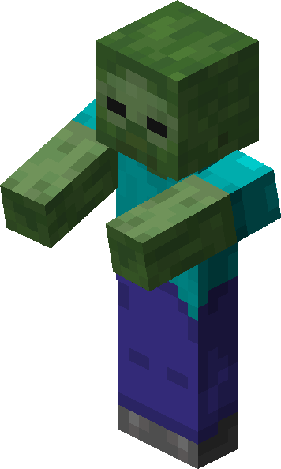
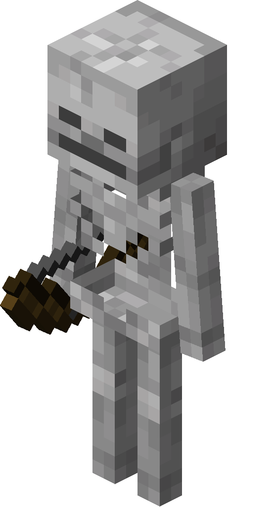
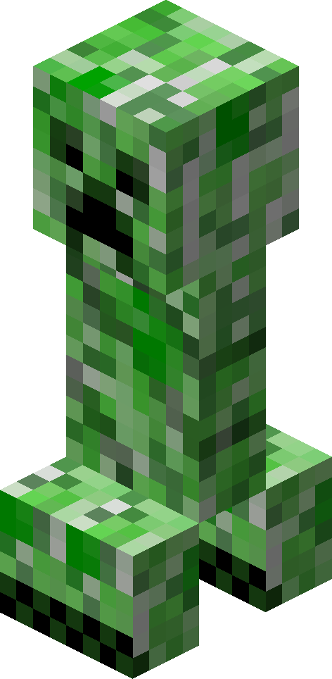
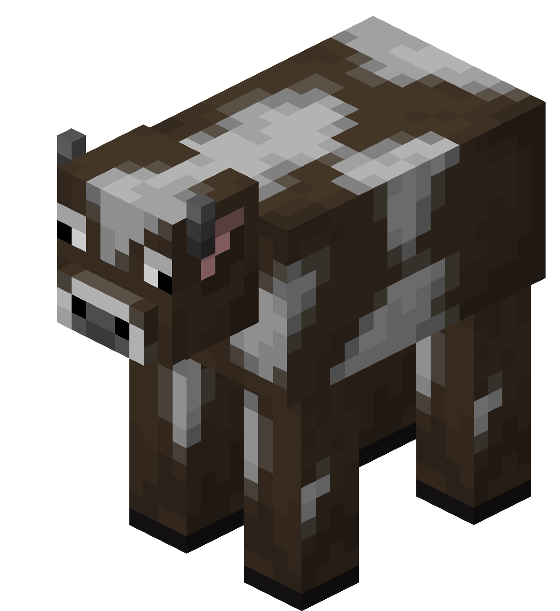
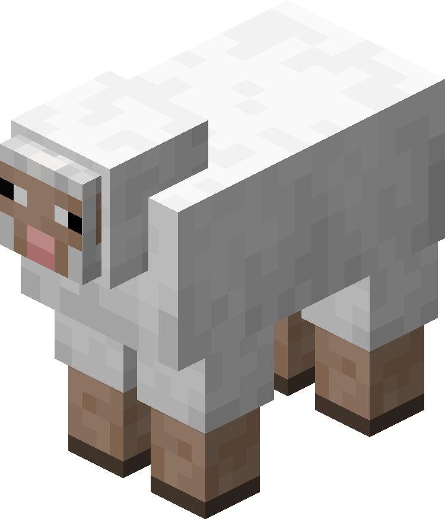
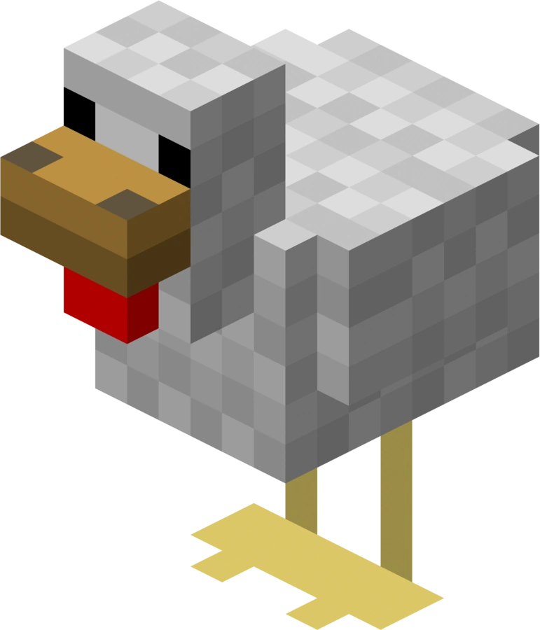

Minecraft mobs
Mobs are the living creatures you encounter in Minecraft. Some are peaceful, while others can become dangerous, so learning how they behave can help you explore and prepare.
Hostile mobs

Zombie
Zombies pursue players on foot and can spawn at night or in dark areas. They burn in direct sunlight, so shelter can protect you during the day.

Skeleton
Skeletons attack from a distance with a bow. A useful strategy is to use blocks or terrain for cover, or craft a shield to block their arrows.

Creeper
Creepers approach quietly and explode at close range. Keep your distance and stay aware of your surroundings. Tip: They are afraid of cats.
Passive mobs

Cow
Cows wander peacefully and can provide beef and leather. Use a bucket to collect milk. They are a great source of food and materials for crafting.

Sheep
Sheep provide wool and mutton. Shear one to collect the wool without harming it. Wool is useful for crafting beds, banners, and other items.

Chicken
Chickens lay eggs as they wander and can provide feathers and raw chicken when killed. Keep them in a fenced area to gather eggs consistently.